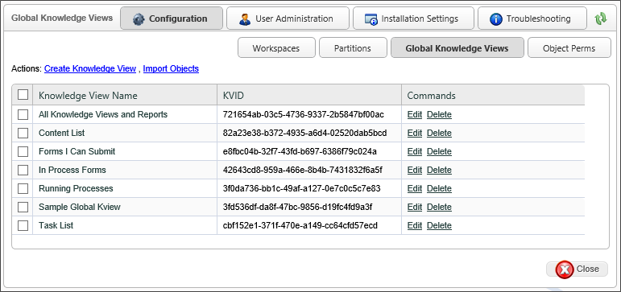
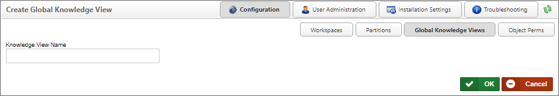
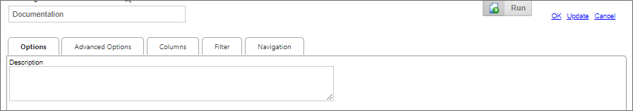

When importing XML/PDZ files from another system, always import the Partition files first, then Global Knowledge Views, and the Profiles last.
When importing XML/PDZ files from another system, always import the Partition files first, then Global Knowledge Views, and the Profiles last.A Global Knowledge View is a Knowledge View that is available to all users across all partitions. By default, Global Knowledge Views are created as Content List type Knowledge View. All lists in Process Director, including the Content List are Global Knowledge Views. These Global Knowledge Views have functions and options similar to specific Knowledge Views in a partition. A Global Knowledge View has some restrictions on the data in columns and filters. Data that is specific to a partition cannot be used (e.g. Form fields, categories), and will not be made available to users who create Global Knowledge Views
When importing XML/PDZ files from another system, always import the Partition files first, then Global Knowledge Views, and the Profiles last.
Global Knowledge Views can be accessed by clicking the Global Knowledge Views button in the Configuration section of the IT Admin area.

One common use of Global Knowledge Views is to create custom task lists and custom content lists. They can also be used to provide metrics for system usage.
 BP Logix recommends that you do not edit any of the default Global Knowledge Views, as doing so will fundamentally alter the operation of Process Director for end users.
BP Logix recommends that you do not edit any of the default Global Knowledge Views, as doing so will fundamentally alter the operation of Process Director for end users.
To create a new item, click the Create Knowledge View action link. The Create Global Knowledge View dialog box will appear.

Provide the Knowledge View Name and click the OK button to close the dialog and open the new Global Knowledge View definition.
As mentioned previously, Global Knowledge Views are available across all partitions, to all users, and thus cannot display partition-specific information. The properties available for a Global Knowledge View, therefore, is a subset of the properties that are available to you when creating a normal Knowledge View inside the Content List, i.e., a partition Knowledge View. The tabbed interface is slightly different as well, using horizontal, rather than vertical tabs, with the tabs named slightly differently.

In the Global Knowledge View, the Options tab contains the property settings you would normally find on the Configure tab of a partition Knowledge View, while the Advanced Options tab contains the properties found on the Options tab of a partition Knowledge View. The properties are largely the same, though the Global Knowlege Views has fewer configurable properties. One notable exception to property locations is the Knowledge View Type property, which is found on the Advanced Options tab of the Global Knowledge View. Additionally, configuring the Global Knowledge View's navigation structure, if any, is performed on its own tab, named Navigation. The Columns and Filter tab of the Global Knowledge View is largely the same as those used in the configuration for a partition Knowledge View.
Since all of the available properties for a Global Knowledge View are also detailed in the Knowledge View Definitions topic of the Implementer's Guide, we will not replicate them here. Please refer to that topic for property configuration.
The Process Director Content List, Task List, Forms I can submit, and other universal items are, by default, generated from Global Knowledge views. Changes to any of the existing Global Knowledge Views on your system will have unexpected results. Once again, BP Logix recommends that you do not edit any of the default Global Knowledge Views, as doing so will fundamentally alter the operation of Process Director for end users.
The best practice is to create new Global Knowledge Views, if necessary, to display in Workspaces, Dashboards, or other interface elements. In most cases, however, the creation of new Global Knowledge Views is unnecessary. Remember, creating a Global Knowledge Viw is only needed if you wish to expose the knowledge Views to all users in the organization.
Continue to the documentation for the Object Perms page.